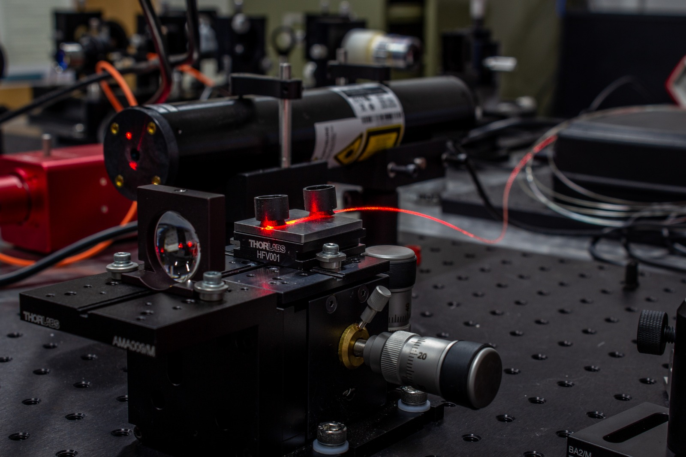
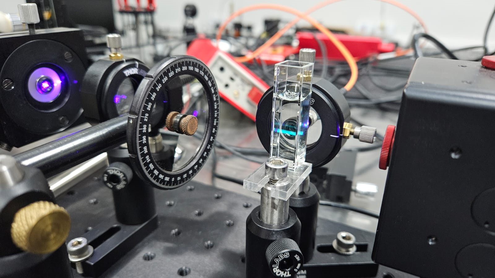

Bem-vindo
Workshop do Laboratório Multiusuário de Óptica e Fotônica
18 e 19 de junho de 2026O WLaMOF 2026 reúne pesquisadores e estudantes nas áreas de óptica e fotônica para palestras, sessões técnicas e interação científica.



